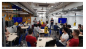
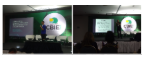

03/12 - HackaTruck MakerSpace inicia hoje na FURB
Iniciou hoje (03/12) o HackaTruck MakerSpace, capacitação em desenvolvimento iOS com aplicação em Internet das Coisas (IoT) usando serviços em nuvem. Uma parceria entre FURB e IBM. Com duas turmas (uma vespertina e outra noturna), estudantes dos cursos de Ciência da Computação e de Sistemas de Informação da FURB estão se especializando em metodologias mais avançadas de desenvolvimento (DevOps, Agile, Scrum e Design Thinking) e tecnologias (IoT, IBM Bluemix cloud services, Swift). O curso terá duração de três semanas e será altamente prático. Além de usar a metodologia CBL (Challenge ... .:. Leia Mais .:.
30/10 - Apresentação de Artigos no Congresso Brasileiro de Informática na Educação
Iniciou hoje (03/12) o HackaTruck MakerSpace, capacitação em desenvolvimento iOS com aplicação em Internet das Coisas (IoT) usando serviços em nuvem. Uma parceria entre FURB e IBM. Com duas turmas (uma vespertina e outra noturna), estudantes dos cursos de Ciência da Computação e de Sistemas de Informação da FURB estão se especializando em metodologias mais avançadas de desenvolvimento (DevOps, Agile, Scrum e Design Thinking) e tecnologias (IoT, IBM Bluemix cloud services, Swift). O curso terá duração de três semanas e será altamente prático. Além de usar a metodologia CBL (Challenge ... .:. Leia Mais .:.